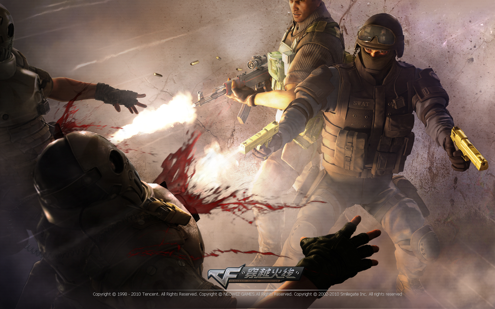
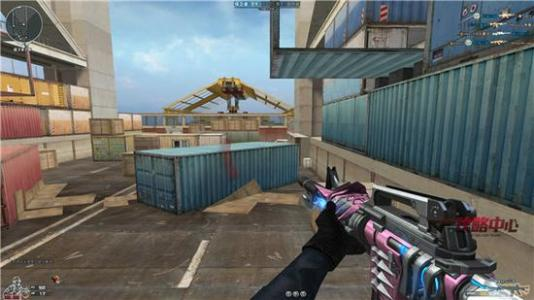
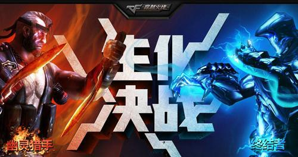
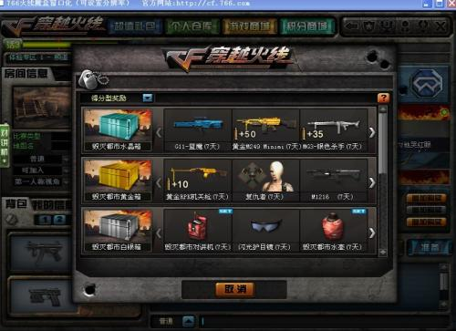

《穿越火线》（Cross Fire，简称CF）由韩国Smile Gate开发，在韩国由Neowiz发行，在中国大陆由腾讯公司运营。《穿越火线》是一款第一人称射击游戏的网络游戏，玩家扮演控制一名持枪战斗人员，与其他玩家进行械斗。 2016年11月，《穿越火线》荣登2016中国泛娱乐指数盛典“中国IP价值榜-游戏榜top10”
团队模式: 以消灭敌人为目标的游戏模式，固定时间内率先消灭规定数量的敌人即可获胜！
生化模式：在这里不分潜伏者和保卫者，大家只有一个目标，生存。要么生存，要么被感染。 生化模式分三种：生化模式（普通），终结者模式和救世主模式。
挑战模式：挑战模式于2011年1月20-21日在穿越火线的各个大区上线，目前共有10张地图：神秘营地、绝命之谷、水之城、瓦尔基里、巨人城废墟、末日剧场、雷霆塔、毁灭都市、末路狂飙、诸神竞技 场、破碎之都、曙光战舰、无畏战舰。其中，巨人城废墟、毁灭都市、雷霆塔、诸神竞技场和破碎之都已知的含有困难难度，共31个关卡，破碎之都10个关卡，而其它地图只有简单和普通难度，简单难度共20 个关卡，且无BOSS奖励；普通难度共有30个关卡。毁灭都市共可五人参与，其他均为四人。末路狂飙为特殊的竞速任务挑战模式，不分难度，且没有BOSS、不以游戏得分为得到奖励宝箱的依据。而诸神竞技场则拥有 多个boss随机出现在每一轮，只有击败全部boss才能通关。破碎之都、曙光战舰、无畏战舰为 守卫挑战模式 ，一共15关，目前只有破碎之都有困难模式
